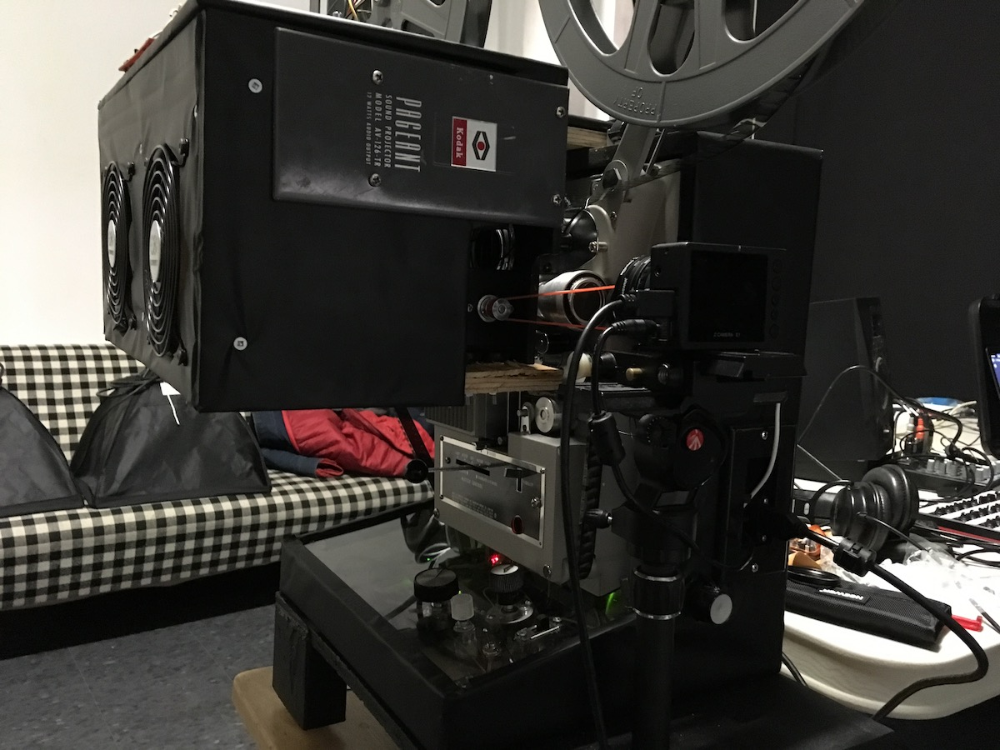

This visual performance instrument is the culmination of years of experimentation with candlelight and projection by Matthieu Hallé. We collaborated to solve the electronic, mechanical, and optical challenges of the final vision.

Matthieu illuminates 16mm analog film with candlelight that is focused with hand-held pieces of glass. Through breath control for candle flicker and subtle movements of the glass, a wide range of abstract imagery is possible.
The technical setup to enable this includes two digital cameras, three projectors, a closed-loop feedback control system for frame synchronization, and a computer for basic image processing.
The first camera captures the candlelight. Matthieu focuses it with broken glass onto the sensor of the camera, which has no lens. The video stream from this camera is fed into the first digital projector.
The first digital projector is mounted inside the 16mm analog film projector, replacing the analog projector's lamp. The digital projector's image is focused on the film instead, creating a composite digital/analog combination.
This combined image is not bright enough to illuminate a large screen directly, so instead it is projected directly onto the sensor of a second digital camera. The output of this final camera is the final video stream that gets projected (with the final digital projector) onto the screen for the audience.
This video features recordings showing the projector, frame sync feedback, rehearsal with Anne Bourne in Toronto (cello, voice), Linsey Wellman in Ottawa (Saxophone), and Connor Bennett with Aaron Hutchinson in Toronto (various instruments).
MAY THE WAVES RISE FROM ITS FLOOR is an ambitious audio-visual performance created by artist Matthieu Hallé. The performance is the culmination of years spent developing a unique practice of using candlelight as a medium to create spontaneous visual imagery, and marks the conclusion of his time spent as artist in residence at LIFT and PIX FILM in Toronto. Heavily influenced by improvising musicians, Hallé has created his own visual instrument that enables cinema to be a live improvised event.
In collaboration with electronic artist Philip Schleihauf, Hallé has outfitted a 16mm film projector with electronic components that allow for the combination of film and video projection. Hallé has created a new 16mm film using original footage of the Salish Sea, that will be illuminated in performance by candlelight he alters with his with hands, glass, and breath.
Combining images from so many sources can create artifacts if the frame rates drift out of sync. We managed this where we were able to control it: the analog film projector's shutter and frame advance mechanism. We replaced the AC motor in the projector with a DC motor so that we could control its speed, in order to sychronize it with the rest of the system.
A crucial part of controlling the analog projector speed is having feedback for closed-loop control. We drilled a hole in the pulley on the projector's drive shaft and glued in a strong magnet. A hall effect sensor is mounted nearby to detect each frame advance.
Matthieu had to remove the mechanical shutter from the projector in order to make room for the digital projector that replaces the lamp. Without a shutter, bright flashes appear between frames for film that has been developed to produce a positive image. We used an LCD light valve as an electronic shutter, mounted in front of the final camera, to eliminate this.
An arduino receives the hall effect sensor signal, and controls power to the motor and the electronic shutter. We mounted some knobs and switches to allow most of the system parameters to be adjusted on the fly.